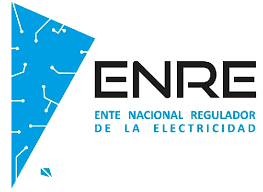
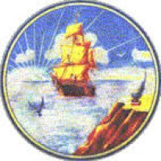
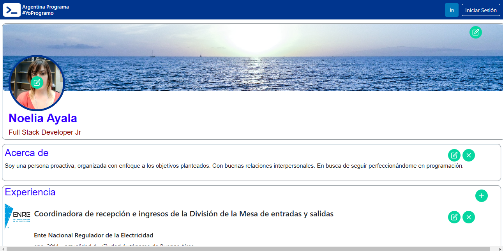

Acerca de
Soy una persona proactiva, organizada con enfoque a los objetivos planteados. Con buenas relaciones interpersonales. En busca de seguir perfeccionándome en programación.
Experiencia
 Coordinadora de recepción e ingresos de la División de la Mesa de entradas y salidas
Ente Nacional Regulador de la Electricidad
ene. 2014 - actualidad 4 - Ciudad Autónoma de Buenos Aires
Recepción e ingreso de documentación en el sitema de Gestión Documental Electronica (GDE) . Tramitación de expedientes. Despacho de documentación.
 Administrativa
Municipalidad de Quilmes
mar. 2011 - dic. 2011 - Quilmes
Sector: Administración, legal y técnica: Armado y gestión de Base de datos, control y corrección de encuestas, Análisis e Informes de Áreas geográficas
Administrativa
Call Center Buenos Aires S.A
may. 2008 - feb. 2011 · Ciudad Autónoma de Buenos Aires
Sector: administración (confección de reportes estadísticos), calculo de las comisiones de los vendedores. Sector: Auditoria (escuchas internas, capacitación a auditores sobre productos)
Educacion Academica
 Argentina Programa
Argentina Programa
Sé Programar
jun. 2022
Instituto San Cosme y San Damián
Bachillerato con orientación en informatica
dic. 2005
Hard & Soft Skills
Proyectos
Portfolio Web Full Stack
#YoProgramo
may. 2023
Desarrollo de una aplicación web Full Stack, primer Portfolio Web
